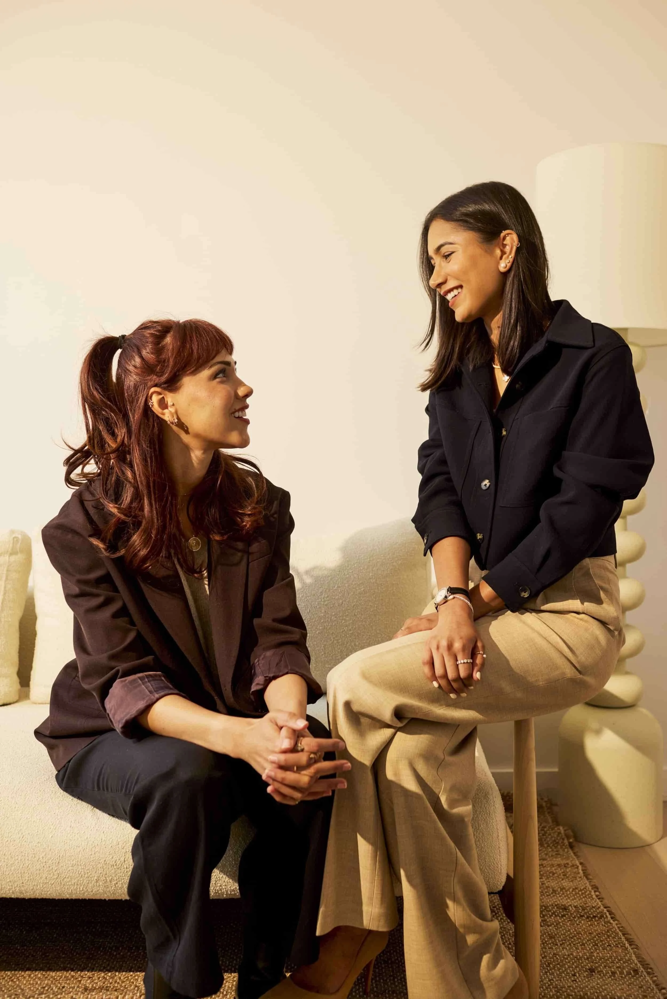

Case Study
Building the brand narrative, community architecture, and digital presence for an attachment-based therapy practice redefining what it means to get results.

The Brief
OurKind Therapy had something most practices don't: an experiential, attachment-based method that actually rewires subconscious patterns in real time. Their therapists don't teach coping mechanisms — they create corrective emotional experiences through play, nervous system tracking, and emotional release.
But their brand didn't reflect how differentiated their approach was. They needed marketing infrastructure that could translate clinical sophistication into a voice people actually trust — one that reaches high-achievers, burnt-out entrepreneurs, and anyone tired of therapy that doesn't work.
Services Delivered
How It Works
OurKind's approach centers on experience as the mechanism for change.
Rather than relying on insight alone, sessions are designed to:
The result is a model where change is not just understood cognitively, but felt, practiced, and integrated.
What We Built Together
The core challenge was making OurKind's approach both legible and resonant.
We started with positioning — clarifying what experiential, attachment-based therapy offers and why it matters for clients who want more than insight alone.
From there, we built the supporting system:
We also launched their group therapy offering, redesigned referral pathways, and created a content engine that allows the clinical team to show up consistently without adding operational strain.
"Callie understood our clinical approach in a way that let her translate it into language that actually resonated. She didn't water it down — she made it accessible without losing what makes it different."
— OurKind Therapy TeamThe Impact
OurKind now has marketing infrastructure that matches the quality of their clinical work. Their brand voice is distinct and recognizable. Their content builds trust before anyone books a session. And their community — built on genuine connection rather than paid acquisition — continues to grow organically.
The result is a practice that doesn't have to choose between clinical integrity and growth. The marketing works because it's an extension of the same values that make the therapy work: meet people where they are, build real trust, and let the results speak for themselves.
See how OurKind Therapy is changing the conversation about what therapy can do.